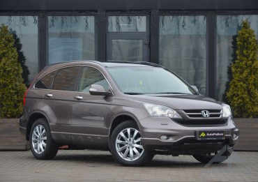

Кросовер (англ. crossover utility vehicle (CUV)) — універсал підвищеної прохідності.
Термін, що походить із Північної Америки, спочатку використовувався для будь-якого транспортного засобу, який поєднує в собі характеристики двох різних типів транспортних засобів, тоді як з часом кросовер здебільшого стосується SUV на базі універсала. Кросовери також описуються як «SUV автомобілі» або «автомобілі на базі SUV». Термін позашляховик часто використовується як загальний термін як для кросоверів, так і для традиційних позашляховиків через схожість між ними.